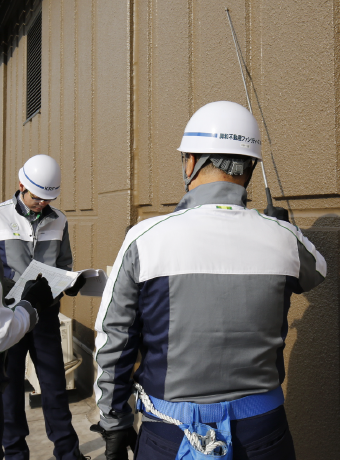

安全への取組み
全員参加で「安全最優先」を徹底。
当社の業務は、設備管理、清掃管理、工事など多岐にわたり、さまざまな条件下で業務を遂行するため、スタッフには安全に対する強い意識と正しい行動が求められます。当社は、事故防止へ向けた体制やルールづくりを進めると共に、万一の事故に備えた対応策の確立、さらには事故に学び、徹底して再発防止に取り組むなど、全社をあげて安全最優先の企業文化づくりに努めています。
安全衛生委員会
- 労働安全衛生法に基づき「安全衛生委員会」を設置し、全社をあげて労働災害ゼロを目指す取組みを推進しています。安全衛生に対する基本方針に基づき、委員会では各業務に対応した安全衛生ルールづくり、社員への安全教育の徹底、KYT(危険予知訓練)の実施等、さまざまな取組みを通じて安全衛生管理の強化を図っています。また、良好な人間関係やコミュニケーションが安全な職場をつくることから、風通しのよい職場づくりにも努めています。
工事安全パトロール
- 
- 外壁改修工事を中心に安全パトロールを実施しています。これは、ルールが適切に、守られ、工事が安全に行われているか、思わぬ危険が潜んでいないかを豊富な経験を持つ有資格者が検査員となり点検するものです。潜在的な危険を見逃さず、いち早く改善することで事故を未然に防ぎます。